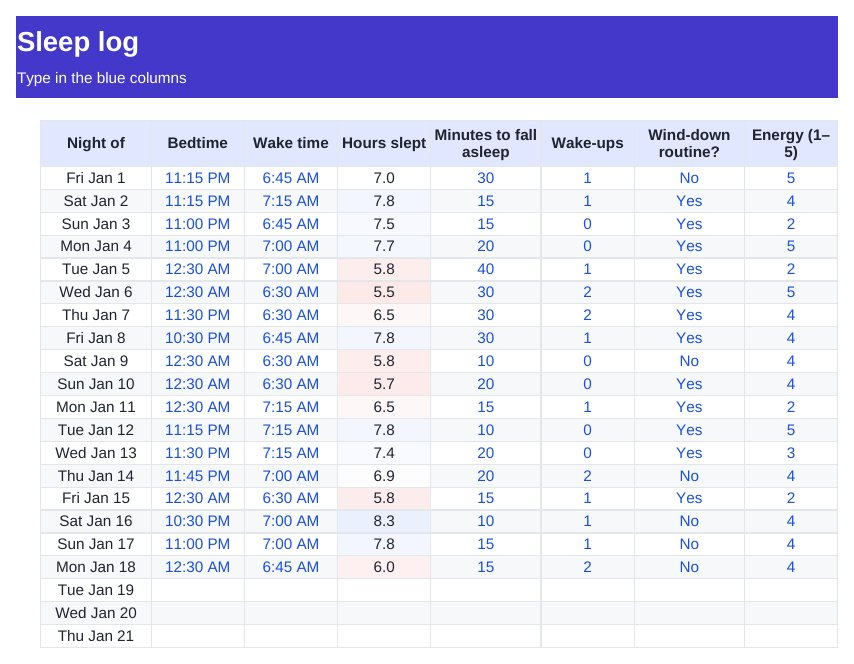

Home › Free Downloads › Excel
Free Excel downloadSleep Log & Bedtime Routine Tracker
Two minutes each morning shows whether your wind-down routine nights really are better nights.
⬇ Download the Excel file .xlsx · free · no sign-upWorks in Microsoft Excel, Google Sheets (File → Import) and Apple Numbers.

What’s inside
- 365-night log: bedtime, wake time, time to fall asleep, wake-ups, energy
- Hours slept worked out for you, even past midnight
- Routine vs other nights side by side
- Chart of your first 30 nights
How to use it
- Each morning, fill in last night’s row.
- Mark whether you did your wind-down routine.
- Compare routine and other nights on the Insights tab.

Sleepward: Bedtime Routine
Sleepward is a four-minute evening reset: empty your head, pick tomorrow's three things, then wind down.
Get it free on the App StoreQuestions
Is this a medical sleep diary?
No. It is a personal log. Talk to a doctor about ongoing sleep problems.
How is "hours slept" calculated?
Wake time minus bedtime, minus the minutes it took you to fall asleep.
Can I print it?
Yes. The log prints in landscape on one page per month or so.
More free downloads
Daily Water Intake Tracker 2027Shift & Pay Tracker with OvertimeJob Estimate & Invoice TemplateClient Appointment Booking LogScreen Time Tracker: What Your Phone Really CostsBible Reading Tracker: All 66 BooksFamily Emergency Plan TemplateAfter-the-Argument Repair WorksheetThe 11 Human Body Systems: Free SlidesBooks of the Bible by Section: Free SlidesWhy Is the Sky Blue and Sunsets Red? Free Slides